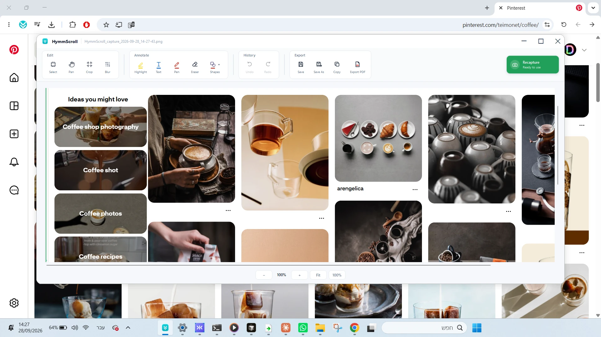

HymmScroll
One long thing → one long screenshot
Capture content that extends below the screen — long web pages, WhatsApp Web conversations, documents, research, legal records, dashboards and more — as one continuous image.
- You scroll at your own pace
- Built-in blur, crop and annotations
- Save as image or continuous PDF

See the scrolling capture demo →